Steamworks, App 4858470: Stats & Achievements, Achievements, New Achievement. For each row: the API name, the
English name and description, Set By: Client, Hidden: no, the two icons from this folder. Then each language under the
achievement's localization. A click on a field copies it. Source: docs/Achievements.md (made by tools/steam/achievement_sheet.py).
1 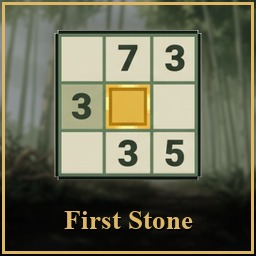
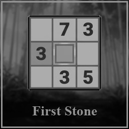
first_puzzle achieved_first_puzzle.jpg English First Stone Solve your first puzzle. Deutsch Der erste Stein Löse dein erstes Rätsel. Français La première pierre Résolvez votre premier puzzle. Español La primera piedra Resuelve tu primer puzle. Português (Brasil) A primeira pedra Resolva seu primeiro quebra-cabeça. 2 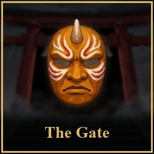
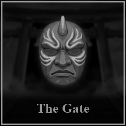
first_boss achieved_first_boss.jpg English The Gate Opens Defeat your first boss. Deutsch Das Tor öffnet sich Besiege deinen ersten Boss. Français La porte s'ouvre Battez votre premier boss. Español La puerta se abre Derrota a tu primer jefe. Português (Brasil) O portão se abre Derrote seu primeiro chefe. 3 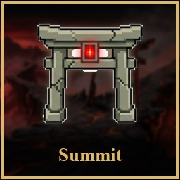
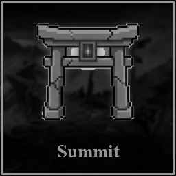
floor_5 achieved_floor_5.jpg English Summit in Sight Reach Floor 5 in a Garden Run. Deutsch Der Gipfel in Sicht Erreiche Etage 5 in einer Gartenrunde. Français Le sommet en vue Atteignez l'étage 5 dans un parcours du jardin. Español La cima a la vista Llega al piso 5 en un recorrido del jardín. Português (Brasil) O cume à vista Chegue ao andar 5 em um percurso do jardim. 4 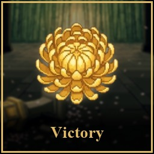
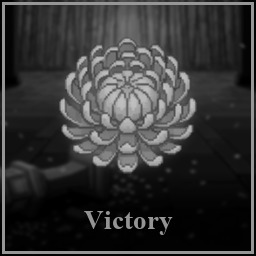
first_win achieved_first_win.jpg English Through the Garden Win a Garden Run. Deutsch Durch den Garten Gewinne eine Gartenrunde. Français À travers le jardin Remportez un parcours du jardin. Español A través del jardín Gana un recorrido del jardín. Português (Brasil) Pelo jardim Vença um percurso do jardim. 5 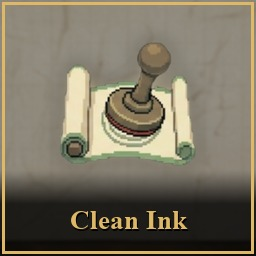
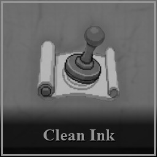
perfect_run achieved_perfect_run.jpg English Clean Ink Win a Garden Run without a single mistake. Deutsch Reine Tinte Gewinne eine Gartenrunde ohne einen einzigen Fehler. Français Encre pure Remportez un parcours du jardin sans une seule erreur. Español Tinta limpia Gana un recorrido del jardín sin un solo error. Português (Brasil) Tinta limpa Vença um percurso do jardim sem nenhum erro. 6 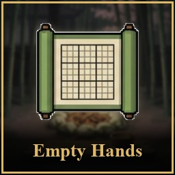
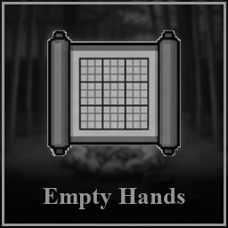
no_items_win achieved_no_items_win.jpg English Empty Hands Win a Garden Run without using an item. Deutsch Mit leeren Händen Gewinne eine Gartenrunde, ohne einen Gegenstand zu benutzen. Français Les mains vides Remportez un parcours du jardin sans utiliser d'objet. Español Con las manos vacías Gana un recorrido del jardín sin usar objetos. Português (Brasil) De mãos vazias Vença um percurso do jardim sem usar itens. 7 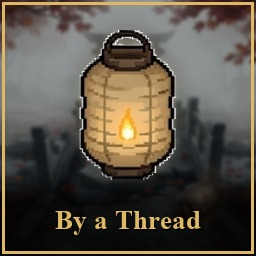
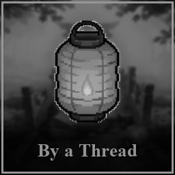
one_hp_win achieved_one_hp_win.jpg English By a Thread Win a Garden Run with 1 HP left. Deutsch Am seidenen Faden Gewinne eine Gartenrunde mit 1 LP übrig. Français Sur le fil Remportez un parcours du jardin avec 1 PV restant. Español Por un hilo Gana un recorrido del jardín con 1 PV restante. Português (Brasil) Por um fio Vença um percurso do jardim com 1 PV restante. 8 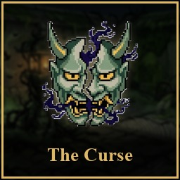
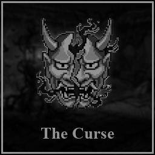
cursed_three achieved_cursed_three.jpg English Wearing the Curse Finish three cursed puzzles in one run. Deutsch Den Fluch tragen Beende drei verfluchte Rätsel in einer Runde. Français Porter la malédiction Terminez trois puzzles maudits en un parcours. Español Llevar la maldición Termina tres puzles malditos en un recorrido. Português (Brasil) Carregar a maldição Conclua três quebra-cabeças amaldiçoados em um percurso. 9 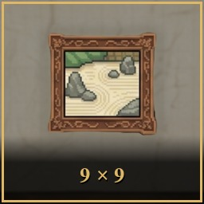
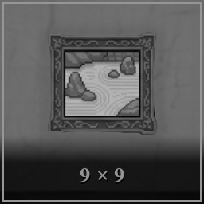
nine_by_nine achieved_nine_by_nine.jpg English The Full Grid Solve a 9×9 puzzle. Deutsch Das volle Raster Löse ein 9×9-Rätsel. Français La grille complète Résolvez un puzzle 9×9. Español La cuadrícula completa Resuelve un puzle de 9×9. Português (Brasil) A grade completa Resolva um quebra-cabeça 9×9. 10 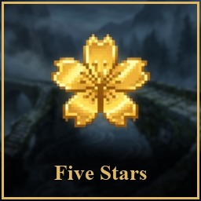
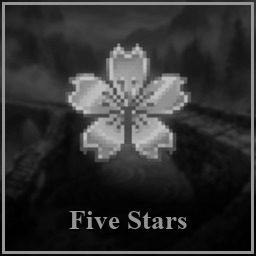
five_stars achieved_five_stars.jpg English Five Stars Solve a five-star puzzle. Deutsch Fünf Sterne Löse ein Fünf-Sterne-Rätsel. Français Cinq étoiles Résolvez un puzzle cinq étoiles. Español Cinco estrellas Resuelve un puzle de cinco estrellas. Português (Brasil) Cinco estrelas Resolva um quebra-cabeça de cinco estrelas. 11 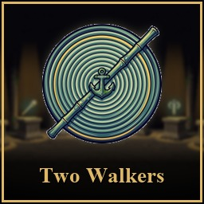
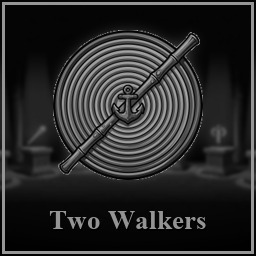
class_second achieved_class_second.jpg English A Second Walker Unlock a second class. Deutsch Ein zweiter Wanderer Schalte eine zweite Klasse frei. Français Un deuxième marcheur Débloquez une deuxième classe. Español Un segundo caminante Desbloquea una segunda clase. Português (Brasil) Um segundo caminhante Desbloqueie uma segunda classe. 12 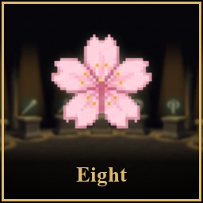
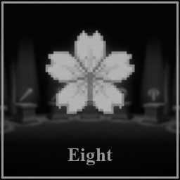
class_all achieved_class_all.jpg English Eight Walkers Unlock all eight classes. Deutsch Acht Wanderer Schalte alle acht Klassen frei. Français Huit marcheurs Débloquez les huit classes. Español Ocho caminantes Desbloquea las ocho clases. Português (Brasil) Oito caminhantes Desbloqueie as oito classes. 13 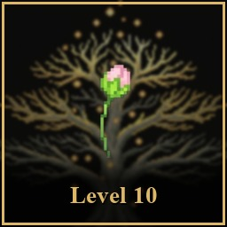
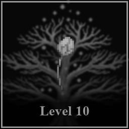
class_level_10 achieved_class_level_10.jpg English Steady Steps Raise a class to Level 10. Deutsch Feste Schritte Bringe eine Klasse auf Stufe 10. Français Pas assurés Faites monter une classe au niveau 10. Español Pasos firmes Sube una clase al nivel 10. Português (Brasil) Passos firmes Leve uma classe ao nível 10. 14 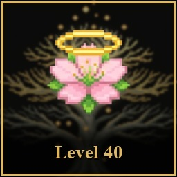
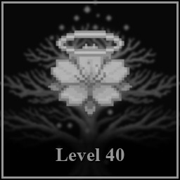
class_level_40 achieved_class_level_40.jpg English Master of a Path Raise a class to Level 40. Deutsch Meister eines Pfades Bringe eine Klasse auf Stufe 40. Français Maître d'une voie Faites monter une classe au niveau 40. Español Maestro de un camino Sube una clase al nivel 40. Português (Brasil) Mestre de um caminho Leve uma classe ao nível 40. 15 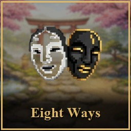
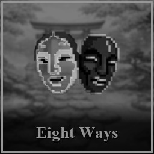
win_every_class achieved_win_every_class.jpg English Eight Ways Through Win a Garden Run with every class. Deutsch Acht Wege hindurch Gewinne eine Gartenrunde mit jeder Klasse. Français Huit chemins Remportez un parcours du jardin avec chaque classe. Español Ocho caminos Gana un recorrido del jardín con cada clase. Português (Brasil) Oito caminhos Vença um percurso do jardim com cada classe. 16 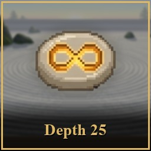
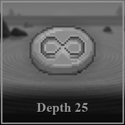
endless_25 achieved_endless_25.jpg English The Deep Garden Reach depth 25 in Endless Zen. Deutsch Der tiefe Garten Erreiche Tiefe 25 im Endlosen Zen. Français Le jardin profond Atteignez la profondeur 25 en Zen infini. Español El jardín profundo Llega a la profundidad 25 en Zen infinito. Português (Brasil) O jardim profundo Chegue à profundidade 25 no Zen infinito. 17 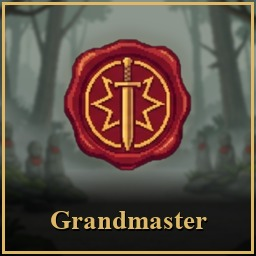
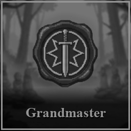
trials_grandmaster achieved_trials_grandmaster.jpg English The Spirits Bow Pass a Spirit Trial at Grandmaster. Deutsch Die Geister verneigen sich Bestehe die Geisterprüfungen als Großmeister. Français Les esprits s'inclinent Réussissez les Épreuves spirituelles au rang Grand maître. Español Los espíritus se inclinan Supera las Pruebas espirituales en Gran maestro. Português (Brasil) Os espíritos se curvam Passe nas Provas espirituais no nível Grão-mestre. 18 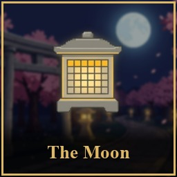
monthly_walk achieved_monthly_walk.jpg English Under the Moon Finish a Monthly Walk. Deutsch Unter dem Mond Beende einen Monatsgang. Français Sous la lune Terminez une Promenade mensuelle. Español Bajo la luna Termina un Paseo mensual. Português (Brasil) Sob a lua Conclua uma Caminhada mensal. 19 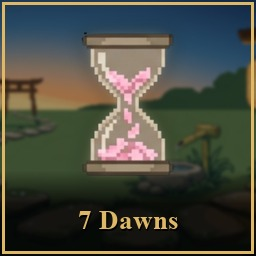
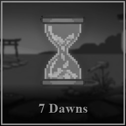
daily_streak_7 achieved_daily_streak_7.jpg English Seven Dawns Keep a Daily Walk streak for 7 days. Deutsch Sieben Morgen Halte eine Tagesgang-Serie sieben Tage lang. Français Sept aubes Gardez une série de Promenades quotidiennes pendant 7 jours. Español Siete amaneceres Mantén una racha del Paseo diario durante 7 días. Português (Brasil) Sete alvoradas Mantenha uma sequência da Caminhada diária por 7 dias. 20 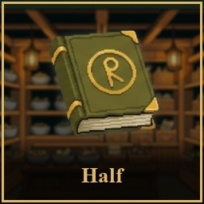
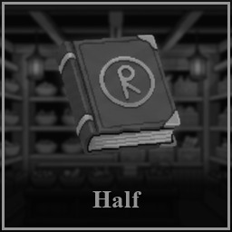
codex_half achieved_codex_half.jpg English Half the Collection Find half of everything in the Codex. Deutsch Die halbe Sammlung Finde die Hälfte von allem im Kodex. Français La moitié de la collection Trouvez la moitié de tout le Codex. Español La mitad de la colección Encuentra la mitad de todo el Códice. Português (Brasil) Metade da coleção Encontre metade de tudo no Códice. 21 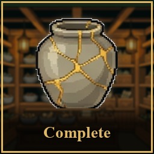
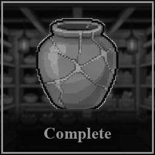
codex_all achieved_codex_all.jpg English The Complete Codex Find everything in the Codex. Deutsch Der vollständige Kodex Finde alles im Kodex. Français Le Codex complet Trouvez tout dans le Codex. Español El Códice completo Encuentra todo en el Códice. Português (Brasil) O Códice completo Encontre tudo no Códice.